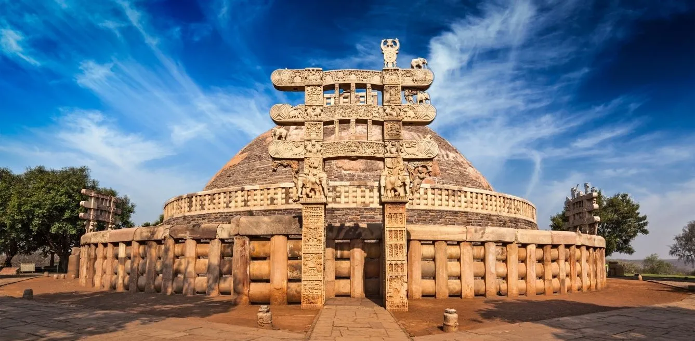
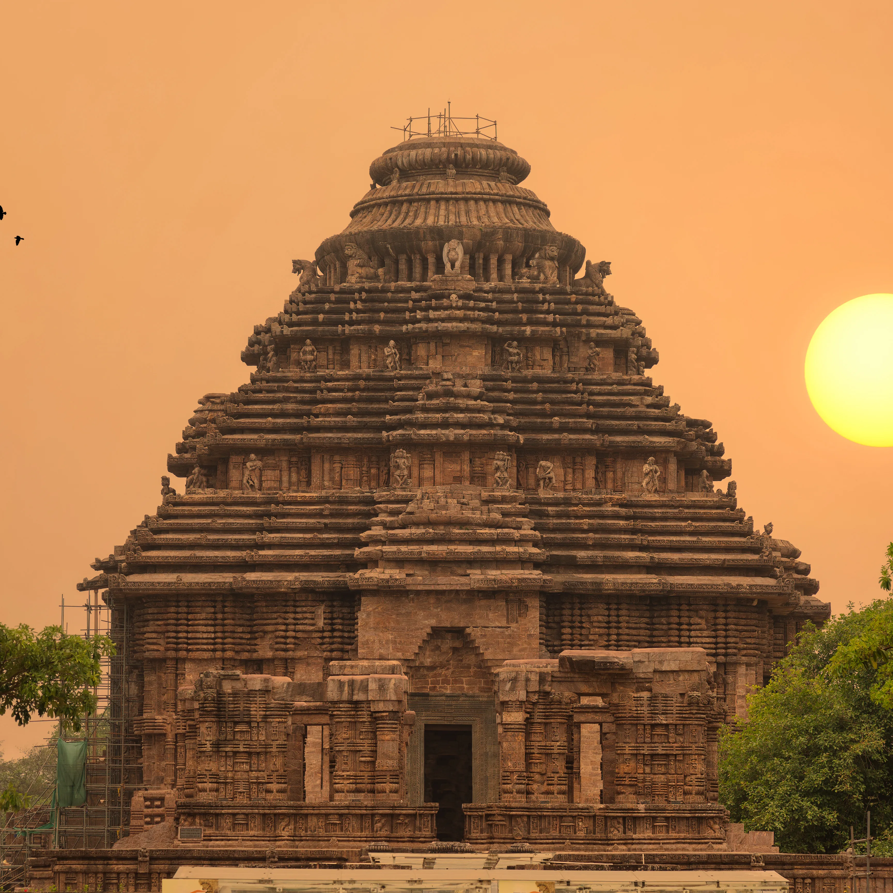
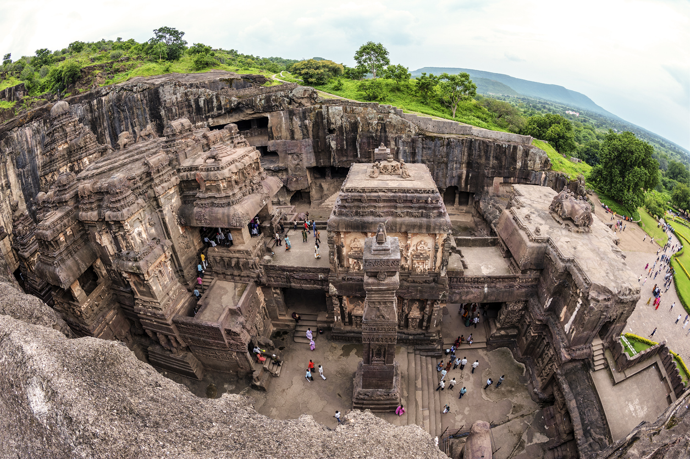

Rani Ki Vav, or the Queen's Stepwell, is one of the many UNESCO World
Heritage Sites that the state of Gujarat is home to. It was constructed
by Rani Udaymati in memory of her husband, King Bhima 1, of the Chalukya
or Solanki dynasty, which existed between 950 and 1300 CE.
Red Fort
Red Fort, Mughal fort in Old Delhi, India. It was built by Shah Jahan in
the mid-17th century and remains a major tourist attraction. The fort
was designated a UNESCO World Heritage site in 2007. The fort’s massive
red sandstone walls, which stand 75 feet (23 metres) high, enclose a
complex of palaces and entertainment halls, projecting balconies, baths
and indoor canals, and geometrical gardens, as well as an ornate mosque.
Sanchi Stupa

Great Stupa, most noteworthy of the structures at the historic site of
Sanchi in Madhya Pradesh state, India. It is one of the oldest Buddhist
monuments in the country and the largest stupa at the site. The Great
Stupa (also called stupa no. 1) was originally built in the 3rd century
bce by the Mauryan emperor Ashoka and is believed to house ashes of the
Buddha.
Mangalyaan
Mangalyaan was India’s Mars orbiter that observed the planet from 2014
to 2022. The mission represented a leap for India in developing
technologies to explore the inner solar system. Mangalyaan’s success as
India’s first mission to another planet has inspired people across the
country.
Hampi Chariot
The former capital of the Vijayanagara Empire, Hampi remains an
essential religious hub, housing the Virupaksha, Lakshmi Narasimha,
Hemakuta Hill, Big Shivlinga and Vithala temples. The architectural
ruins of Hampi are a UNESCO World Heritage Site. Rock-climbing
enthusiasts will adore Hampi, considered the bouldering capital of
India, and the city’s rocky landscape, dotted with ancient temple ruins,
makes for a unique climbing experience.
Konarch Sun Temple

On the shores of the Bay of Bengal, bathed in the rays of the rising
sun, the temple at Konarak is a monumental representation of the sun god
Surya's chariot; its 24 wheels are decorated with symbolic designs and
it is led by a team of six horses. Built in the 13th century, it is one
of India's most famous Brahman sanctuaries.
Ellora Caves

Ellora is also world famous for the largest single monolithic excavation
in the world, the great Kailasa (Cave 16).Ellora represents the epitome
of Indian rock-cut architecture.The 34 "caves" are actually structures
excavated out of the vertical face of the Charanandri hills.